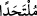
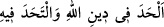
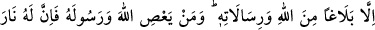
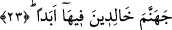

22. De ki: Gerçekten (bana bir kötülük dilerse) Allah’a karşı beni kimse himâye
edemez, O’ndan başka sığınacak kimse de bulamam.
“De ki: Gerçekten”, emrine karşı gelirsem ve kendisine şirk koşarsam “Allah’a”,
O’nun kahrına ve azâbına “karşı” kurtuluş dilediğim takdirde “beni kimse himâye
edemez”, beni kimse kurtaramaz. Ya da O bana hastalık vermek veya beni öldürmek ya
da bunların dışında başka bir musîbet vermek gibi kötülük takdir ettiğinde buna karşı
beni hiç kimse kurtaramaz.
Bâzı âlimler bu ifâdenin tevhidde ihlâsa delâlet eden bir lâfız olduğunu söylerler.
Çünkü “tevhid” demek insanın bakışlarını yalnız Hakk’a çevirmesi demektir. Bu da
ancak Cenâb-ı Hakk’a dönerek, O’nun dışında herkesten yüz çevirip, başkasına değil,
sâdece O’na dayanarak meydana gelir.
“Ve O’ndan başka bir sığınak bulamam.”
“
: sığınak”. Arapça’da “
” tâbirleri kullanılır, bunun anlamı
“filânca Allah’ın dininden başka şeye meyletti. Filanca filan şeyden yüz çevirdi”
anlamınadır. Sığınağa “multehad” denilmesi, sığınan kimsenin oraya meyletmesinden
dolayıdır. Bu durumda mânâ şöyle olur: “De ki gerçekten Allah’a karşı beni kimse
himâye edemez ve sıkıntılar esnâsında O’ndan başka hiçbir sığınak, varacak barınak ve
meyledecek yer bulamam.” Şu hâlde O’ndan başka hiçbir barınak ve sığınacak hiçbir
kucak yoktur. Bu son ifâde aynı zamanda Peygamber (s.a.) Efendimiz’in kendisi için
hiçbir şeye gücünün yetmediğini beyân etmektedir. Bundan önce ise başkalarının işini
görmekten âciz olduğu beyân edilmişti. Şu hâlde Peygamber Efendimiz (s.a.) şöyle
demiş oluyor: Ben kendi nefsim hakkında hiçbir şeye mâlik olmadığıma göre acaba
sizin için herhangi bir şeye nasıl mâlik olabilirim!
23. (Benim yaptığım) ancak Allah katından olanı, O’nun gönderdiklerini tebliğdir.
Artık kim Allah ve Rasûlü’ne karşı gelirse, bilsin ki ona, (kendi gibilerle birlikte)
içinde ebedî kalacakları cehennem ateşi vardır.
İlk cümle, bir önceki âyette geçen “mâlik değilim” fiili üzerine mâtuftur. Çünkü
“tebliğ” irşad ve fayda demektir. Bu iki cümle arasında geçen cümleler ise Peygamber
(s.a.) Efendimiz’in kendine dahi gücünün yetmeyeceği anlamını vurgulayan parantez
arası cümledir. Dilbilgisi kuralları açısından atfedilen cümle ile kendisine atıf yapılan
cümle arasına uzunca bir fasıla girmesinin herhangi bir sakıncası yoktur.
Burada yer alan istisnâ ise Peygamber Efendimiz’in kendisini “tebliğci” olarak
nitelemesindeki mubalağayı yansıtmak içindir. Böylece gösterilmiş oluyor ki onların